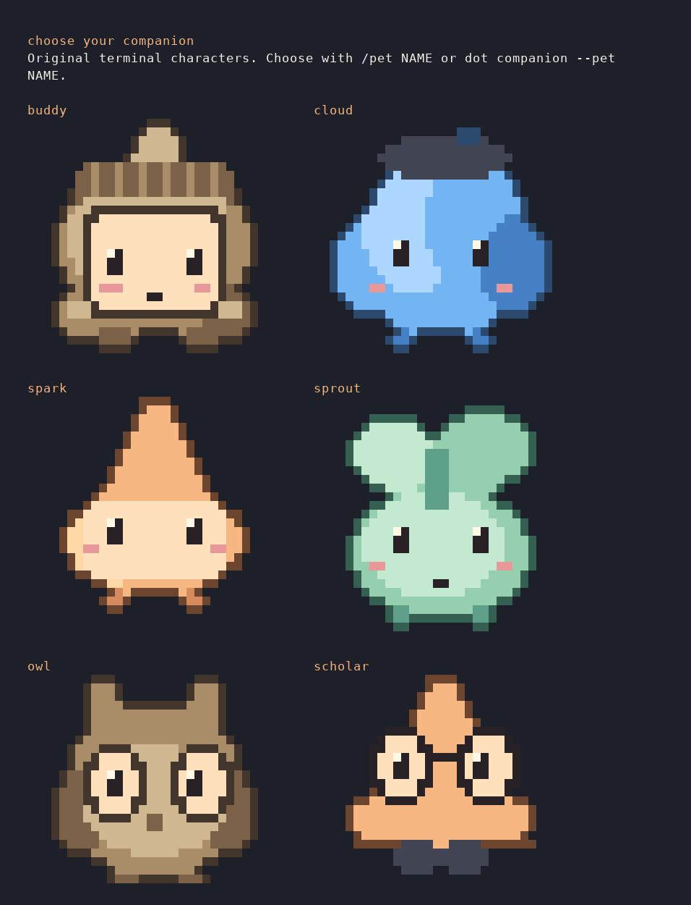

PREVIEW 0.8.2 · WORKFLOW GUIDE
Your local companion,
close to the work.
An early Linux x86_64 workflow preview for existing Git projects. Each project, terminal session and editor workspace requires explicit enablement. A local model is needed for conversation and proposed corrections; the work desk and reminders work without inference. macOS validation is pending.
1. Verify and install the CLI
Download the archive and SHA256SUMS from the v0.8.2 release page, then verify the downloaded archive and install:
sha256sum --check --ignore-missing SHA256SUMS
tar -xzf devcompanion-0.8.2-linux-x86_64.tar.gz
mkdir -p "$HOME/.local/bin"
install -m 755 devcompanion-0.8.2/devcompanion "$HOME/.local/bin/devcompanion"
export PATH="$HOME/.local/bin:$PATH"
ln -s devcompanion "$HOME/.local/bin/dot"
dot --versionThe optional dot link refuses to replace an existing command; use devcompanion if the name is taken. Version 0.5 adds a built-in updater:
dot update --check
dot update
# A previously downloaded official archive can be used offline:
dot update --from-archive /path/devcompanion-0.8.2-linux-x86_64.tar.gz --checksum /path/SHA256SUMSThe explicit updater uses GitHub HTTPS, verifies the published checksum and archive layout, and replaces the installed binary atomically. It preserves memory, models and the alias, retains one previous executable and restarts a matching managed presence unit. Open chats finish with their original binary; quit and reopen to load the update. Checksums are consistency checks, not independent release signatures.
Version 0.4 and earlier lack this command. After verifying the 0.6 archive, bootstrap once:
install -m 755 devcompanion-0.8.2/devcompanion "$HOME/.local/bin/devcompanion.new"
mv "$HOME/.local/bin/devcompanion.new" "$HOME/.local/bin/devcompanion"
dot --version
# Only if login presence is installed:
dot presence stop
dot presence start2. Set up local inference once
Install Ollama, start its local server and explicitly download a model. Skip the pull if ollama list already shows it.
ollama serve
# In another terminal:
ollama pull qwen3:4b-instruct-2507-q4_K_MThe tested 4B instruct weights take about 2.5 GB. qwen3:1.7b is a smaller tested option around 1.4 GB. Disk size does not prove memory fit or quality. Initial downloads need internet; core operation afterward uses loopback inference. Use a trusted local runtime; declared remote model delegation and cloud names are refused.
3. Enable only the project you choose
Open a terminal in an existing Git project. The login service uses the Linux user systemd session; install it once per user, then enable each initialized project separately:
dot setup --check
dot setup --yes --presence --proactive --goal "Finish the current bug fix"
dot shelldot shell is a normal interactive Bash session. It records only commands typed there while the shell is in this enabled Git project, with bounded combined output, actual exit status and before/after Git state. Type exit to leave it. Then use dot desk for open incidents and reminders, or dot for conversation. You can use dot presence disable for this project, dot presence status to inspect the service, and dot presence uninstall to remove the login unit. The service records events and reminders without inference by default. The optional proactive setting permits local model investigation. It never runs checks, captures a screen or listens to the microphone automatically.
Inside chat, use /models, /pets and /companion. Commands beginning with dot belong in your normal terminal. Recognized terminal commands pasted into chat show guidance before model inference; exact read-only forms also show results. Commands with arguments do not run or change settings. Use the explicit slash action, another terminal or /quit first. /companion-name NAME renames your companion; /name NAME changes your own greeting.
Preview with dot pets or /pets, then choose /pet buddy, cloud, spark, sprout, owl, scholar, dot, cat, fox, robot, frog, bunny, penguin, ghost, mushroom, orbit or none. /pet-color auto|amber|blue|mint|rose|lavender|cocoa saves its color separately from the CLI theme. Auto uses character defaults. Unicode terminals render filled pixel art with true, indexed or basic color; narrow/dumb/redirected terminals use compact text. NO_COLOR keeps a plain silhouette. Import a small UTF-8 pixel pet with companion --avatar PATH: up to eight lines, 48 columns and 2048 bytes. These are original terminal characters with task-state expressions, without 3D rendering or continuous animation. Response styles are concise, friendly and mentor. Name, style and up to ten global preferences guide the local model; a small model can still miss that guidance.
See the terminal pet gallery

Rendered from a real terminal capture in a disposable fixture. Artwork is original.
/model NAME verifies a downloaded brain, switches the current conversation and saves it. --model NAME is a temporary override. There are no automatic downloads. Running tasks keep their selected model.
Inside chat, /incidents, /reminders and /desk open the same work ledger. /quiet 30 pauses desktop interruptions; /assist controls chat awareness. First use waits for your stated goal, conversation or new observed event before automatic model reasoning. Idle observation makes no model calls.
dot remind add --in 20m "Check the migration"
dot remind snooze ID --in 10m
dot remind done ID
dot focus 25
dot quiet 30Reminder IDs come from dot remind list. Focus schedules one optional break reminder; quiet pauses desktop interruptions without deleting evidence or reminders. In chat, /remind 20m Check the migration and /focus 25 use the same project.
Desktop dot, quick panel and work desk
dot desktop check
dot desktop
# Optional launcher and graphical login presence:
dot desktop install --loginThe native Linux desktop uses system Python 3, PyGObject, GTK 3 and an SVG loader. On Ubuntu/Debian, missing components can be installed with sudo apt install python3-gi gir1.2-gtk-3.0 librsvg2-common. The CLI works without the optional desktop dependencies.
Click the dot to open the quick panel; drag to move; right-click for quiet, work desk or Quit desktop. Version 0.8.2 prefers X11/XWayland before loading GTK when available, preserving an explicit display preference. dot desktop check reports the selected backend. GNOME/XWayland honored keep-above in the maker test; placement and keep-above vary by window manager. The Project button selects a Git workspace and asks for first-use consent. Every goal, incident, task, patch and check shares the existing local ledger.
The quick panel and work desk share a goal draft. Eight starters cover source explanation, change review, debugging, feature tracing, relevant tests, security review and planning; selecting one fills the draft without submitting work. Git status, Secret hygiene, Project map and Audit file are explicit local quick looks. The hygiene action uses the installed local detector and shows redacted known-pattern findings. The project map offers bounded file/line navigation leads, not a claim of full understanding. Audit file previews a bounded status inventory and saves only to a new filename you choose; it is not a full code or security audit.
The model selector shows downloaded local completion models and saves the choice for future work. Personalize offers pixel or soft artwork, color, name, response style, 16 original characters, a saved 72–176 px size and Off/Gentle/Playful motion. Hide pet removes the character from display while keeping work accessible. The off-white/black theme has a saved night mode; switch with the desk header, quick panel, dot menu or Ctrl+Shift+N in a focused window. Hover makes a visible pet smile and follow nearby pointer movement. Gentle mode shows a sleepy expression after four idle minutes. Playful adds rare brief edge strolls only when the panel and desk are closed. GTK's reduced-animation setting suppresses motion; pet activity never starts a model request.
Give companion work starts a persistent investigation. Close the panel while it works; open returned work to inspect original errors, recorded model interpretation, actual source ranges and their freshness, and the diff. Applying the current displayed patch and running a named check are separate approvals. The check dialog shows the exact argument array. Cancel, retry, revision and guarded rollback remain available. Continuity shows saved outcomes without generating a new recap. A stopped worker is shown as needing attention.
After local voice setup, Speak a goal records one visible turn. Hold Ctrl+Alt+Space in the focused companion window and release it to finish, or press Esc to cancel. Personalize can request a session-only global shortcut through the desktop permission dialog. Recognized words join the goal draft for review; they never approve actions. Read report aloud uses local speech. Physical microphone and shortcut comfort still need hands-on trials.
dot desktop install adds just the application launcher; --login also adds a login entry that starts only the dot, keeping the panel closed. Click the dot when needed. dot desktop uninstall removes only managed entries and retains data. Closing the desktop does not cancel accepted tasks. Quiet suppresses interruptions while work can continue. The separate presence service and permitted adapters provide background events.
Source analysis requires actual reads; explicit related-test requests require a range covering the selected test anchor. Source navigation is bounded to supported project text, not complete repository understanding. Large sources up to 256 KiB can be read; edits retain the small-file scope. Explicit analysis-only work rejects patch proposals. On the pinned Offline-GPT checkout, the newer project map placed the automation runner and its test among the first two of 16 candidates after an earlier map missed both. The retained local-model explanation still misstated test coverage and lacked usable citations; that result remains unverified. Larger-project correctness remains unproven.
The static candidate and bundled GTK interface passed a network-isolated maker journey after setup, including real local-model source analysis; external connectivity was unavailable. The graphical patch/check journey used a controlled model. These are technical evaluations, not independent daily-use trials.
Background investigation, with a separate opt-in
dot proactive enable
dot proactive status
dot proactive list
dot proactive show ID
dot proactive rate ID useful
dot proactive disableWith login presence running and the project enabled, new recorded command/check failures and saved VS Code errors can trigger a bounded local explanation while chat is closed. Existing errors are baselined when you enable it. Unsaved diagnostics are excluded. Related saved source is gathered through simple local imports in a six-file, 6,000-byte context; common private/dependency paths and symlinks are excluded.
Each explanation separates the original observation, a tentative model hypothesis and a suggested next step with an exact evidence label. A label validates the cited location, not the truth of the hypothesis. Read details with /insight ID or dot proactive show ID; /insights lists them. Source changes and cleared incidents make answers historical. Review every suggested correction.
Editor evidence settles for four seconds; duplicate document versions do not trigger another call. The default project cooldown is 90 seconds, configurable with dot resources --proactive-seconds 180. One worker runs at a time with a 512-token response and 60-second request limit. Quiet pauses scheduling and publication. Missing models produce one unavailable record instead of repeated calls. Failed explanations show a local reason; explicitly enable again to retry either failure. No generated commands, checks or patches execute automatically.
4. Follow an incident to a reviewed correction
A failed dot shell command or enabled editor diagnostic becomes an incident with original evidence. Use dot desk, /incidents and /incident ID to inspect it. /fix ID can ask the local model to prepare a bounded correction. /review ID shows its report and diff; /apply ID is a separate approval. You can still start an unrelated delegated goal with /work. Tasks never run model-generated commands.
dot check add tests -- npm test
dot task review ID
dot task apply ID
dot task verify ID tests
# After a completed failed task check:
dot task revise IDUse the IDs printed in your own session. A visible editor error clearing is not a passing check. Run an explicit named check, such as dot verify tests after dot check add tests -- npm test. The result is current only for the code state it checked. An older passing run remains historical evidence. A failed named check can feed a separately reviewed task revise ID; it does not approve or apply itself.
task show ID reports current verification separately from historical status. Changed code or check definitions invalidate passing evidence. task rollback ID restores exact task content only on unchanged applied code and refuses later edits. Roll back child tasks before their parent.
Work can continue after chat closes while the laptop stays on. Returning with start resumes dead queued/running workers using fresh evidence. A dead apply/check/rollback operation needs task recover ID, which marks its result unknown and executes nothing. Inspect files and any surviving check processes before retrying. Old applied tasks from pre-0.3 releases lack the post-application state required by task verification/rollback; ordinary verify CHECK still works.
Bounds: three active tasks, serialized task inference, eight model turns, up to three small UTF-8 files including new files. Existing files must be at most 32 KiB; individual inserted text is bounded. Supported ordinary paths are required; symlinks, ignored new paths and common secret/dependency paths are excluded. Filename filters cannot recognize every secret. New files cannot overwrite existing files. No model-generated commands run.
5. Memory you control
dot memory add "Use SQLite for local storage"
dot memory list
dot memory edit ID "Use SQLite with explicit migrations"
dot memory search SQLite
dot memory learn
dot memory review
dot memory accept ID
dot memory reject OTHER_IDGoals and decisions stay in this project. Learning proposes guidance from the latest twelve saved user messages, with copies of its cited sources. Proposals remain inactive until accepted. Preferences become global; decisions stay in this project. companion --learning on enables proposals after conversation, at most once every five minutes; the default is off. No model training occurs. In chat: /decision TEXT, /learn, /memory-review, /memory-accept ID, /memory-reject ID.
Keyword search needs no model. Optional semantic retrieval needs a local embedding model downloaded explicitly:
ollama pull all-minilm:22m
dot memory index --embedding-model all-minilm:22m
dot memory search "database persistence choice"
dot memory index --clearThe embedding weights take about 45 MB. Indexing covers the latest 200 notes, using a 350-byte prefix per note. It runs locally on CPU. Edits invalidate vectors; repeat indexing after changes. Unavailable embeddings fall back to keyword retrieval. This is bounded retrieval, with no semantic memory graph. Embeddings can cause a chat model reload on small machines.
6. Choose budgets and compare models
dot doctor
dot resources --device cpu --context 4096 --reply-tokens 256 --keep-alive-seconds 0
dot benchmark --category explain --models qwen3:1.7b qwen3:4b-instruct-2507-q4_K_M --task "Explain our storage choice"
dot benchmarks
dot rate ID useful
dot rate OTHER_ID unhelpful
dot route --category explainInspect each actual response before rating. Comparisons record total time, time to first text and actual prompt/output counts when Ollama provides them. Routing suggests the fastest latest response rated useful for the latest identical task, current code/context/settings and unchanged model digest. Add --apply to save the suggestion. It does not infer quality for other tasks or switch automatically. Loading, order and caches affect timings; these are local observations, not standardized benchmarks.
CPU/auto, context, reply/task token caps, model retention and proactive cooldown are explicit controls. Lower limits can reduce context coverage and answer quality. The default requests ten-minute model retention; Ollama may unload under pressure. models --task TEXT gives model-generated advice; measured route has a separate evidence requirement.
7. Optional VS Code diagnostics
Download dot-developer-companion-0.1.0.vsix, then run code --install-extension dot-developer-companion-0.1.0.vsix. Open a trusted workspace in an initialized Git project and choose Dot: Enable Editor Diagnostics for Workspace from the VS Code command palette. Disable it there when finished. The extension sends bounded diagnostic messages, file paths, lines, severity and saved state; it sends no source buffers. VS Code must be open to provide diagnostics. A diagnostic can clear without a compiler or named check passing.
8. Optional local voice
dot voice setup installs local English Whisper/Piper once. dot voice status reports readiness. /voice or dot voice chat opens voice mode: the first turn records, then Enter records each follow-up. Enter also finishes a recording early. q + Enter, “exit voice”, “stop listening”, or Ctrl+C ends the session. /voice once or dot voice ask --once records one turn; --audio question.wav uses a file.
dot voice chat --continuous or /voice continuous listens again after replies until exit. The microphone pauses during transcription, reasoning and playback. A simple energy gate skips silence; noisy rooms still need care. It is turn-based speech, with no wake word or interruption during playback. Windows default to 12 seconds (maximum 30); recording stays off outside explicitly opened voice mode. Tests cover two turns, silence and microphone-child cancellation using controlled audio tools. Physical microphone selection, room noise and playback comfort still need hands-on validation.
9. Local publishing guard
dot guard setup
dot guard check
dot guard enable
dot guard scan --staged
dot guard status
dot guard disableSetup downloads checksum-verified Gitleaks 8.30.1 once. Ordinary checks need no internet or model. Commit hooks scan full changed index files; push hooks scan outgoing history, including a secret removed before a new branch is published. Existing Git hooks are forwarded. Reports show rules, files, lines and commit IDs, with values withheld. Actual tracked environment files block; missing .env ignore rules and literal broad Actions permissions warn. Files and credentials are never changed automatically.
Enablement changes only this project’s local hooks path, under its Git common directory. guard disable restores the previous setting; it refuses to overwrite a later manual change. A missing detector, changed index, invalid report or exceeded scan limit blocks the action. Local hooks are bypassable; known-pattern text scanning is essential hygiene, not a full audit. Unknown/short secrets and unsupported content may be missed. Working/staged text is bounded to 1,000 files, 2 MiB per file and 32 MiB total; pushes cap at 16 refs / 1,000 commits per ref. Original user hooks retain their own behavior.
GitHub Security Lab’s gh-secure configures hosted GitHub protection online. Dot complements that with local checks and does not change GitHub settings. If a credential was shared, rotate/revoke it; deleting the latest file alone does not remove history.
Local data and private copies
The default database is ~/.local/share/devcompanion/state.sqlite3, or $XDG_DATA_HOME/devcompanion/. DEVCOMPANION_HOME relocates it. Storage and output copies use owner-only permissions.
- Stored per project: goals and decisions, bounded conversation and runs, open and cleared incidents, reminders, activity, task reports, proposed file text, proactive explanations and voluntary trial records. The database retains at most 200 recent run records per project; do not treat it as a general shell history.
- Identity, pet, style, model, proactive/learning defaults and global preferences share the local database.
forgetretains global settings and preferences;unprefer IDremoves a preference. dot shellstores up to 64 KiB of combined PTY output per command; normaldot runbounds each output stream. Commands and output can contain secrets. A shell process can access files outside its working directory; project attribution is not a sandbox.- Editor diagnostics contain paths, lines and messages but no source buffers. The service retains project events only after explicit enablement.
dot voiceuses explicit recording and local engines; microphone off outside explicitly opened voice sessions. - Guard installation and its latest redacted report live in Git common-dir/dot-guard, separately from SQLite. Temporary private text/audio copies are removed after use. Reports can contain sensitive paths; review before sharing.
forgetand SQLite export/backup do not remove/copy Git guard metadata; useguard disable. Presence-enabled projects can receive one local notice for a new blocking report; presence does not scan every edit. - No desktop capture, retrospective shell history import, silent cloud fallback or automatic application usage telemetry. Optional trial reports stay local until you manually share them. Explicit updates contact GitHub.
dot privacy
dot data export /private/path/project.json
dot data export /private/path/project-with-guidance.json --include-personalization
dot data backup /private/path/all-projects.sqlite3
dot forget --yesExports contain only the selected project's records, with global identity/preferences only if requested. Backups consistently copy the entire database, including every project's private content. Model weights are excluded. Outputs refuse overwrites. Keep them private. Forgetting a project leaves earlier exported copies intact and does not change project files; stop active work first.
To inspect a backup safely, use a separate data directory with a copy named state.sqlite3 and point DEVCOMPANION_HOME there. Do not replace a live database while tasks run.
This site has no analytics script and uses self-hosted fonts. GitHub hosts downloads and public feedback; its own logging and terms apply. Remove private content before submitting feedback.
Evidence and remaining limits
The recorded v0.5 local-model fixture used a multi-file billing project with nine unchanged Python tests: a failed check triggered background investigation with chat closed, followed by an explicitly requested, reviewed correction and a passing current check. The evaluation also checked stale insights and returning context. Python, Node/TypeScript, Go, Rust and ESLint formats have automated coverage; unsupported output retains its raw excerpt. These are maker fixtures, not independent developer trials. The local-engine evaluation was not network-isolated. A larger Flask 3.1.2 trial produced incorrect patches and missed an empty-string case; review and unchanged checks exposed those failures. This is an early workflow preview, with broader debugging reliability still to establish.
Local models can produce wrong or poorly worded answers even when a patch applies. Review the diff and run the checks that matter. Editor diagnostics can be stale; a cleared diagnostic and an old passing check are separate from current verification. Elaborate character animation, broad autonomous completion and physical microphone comfort validation remain outside this preview. A larger Offline-GPT task still produced an uncited, partly incorrect local-model explanation; the desktop flags such a result as unverified and keeps the inspected source ranges visible.
dot run commands are bounded noninteractive jobs with no stdin and a default 120-second timeout. dot shell is interactive, has no job timeout, and retains only selected-project prompt commands. Its Bash hooks can be changed by user shell customizations; attribution is best effort and not a security boundary. Your chosen checks may need network access.
First developer trials
Try one real failure or reminder and report whether it helped, missed something or interrupted you. Start and finish only sessions you choose to record:
dot trial start
dot trial rate INCIDENT_ID helpful
# Or: incorrect / noisy
dot trial missed --note "Short private description"
dot trial finish helped
# Or: blocked / neutral
dot trial report --json
# Optionally save a new aggregate report file:
dot trial report --output /path/trial-report.jsonThe shareable report contains counts only: declared/returning sessions, outcomes, ratings and retained alerts. It excludes source, paths, identity, command output and private notes. Nothing uploads. Declared sessions are not unique users; total missed errors and detection accuracy remain unknown. Rate a model explanation separately with dot proactive rate ID useful|noisy|missed|unrated.
Feedback and support
Report what you tried and whether it helped finish a real task through first-session feedback or bug templates. Include model and platform details without private code. The application source remains private; the free archive includes an MIT application license and dependency notices.
Get the preview ↗